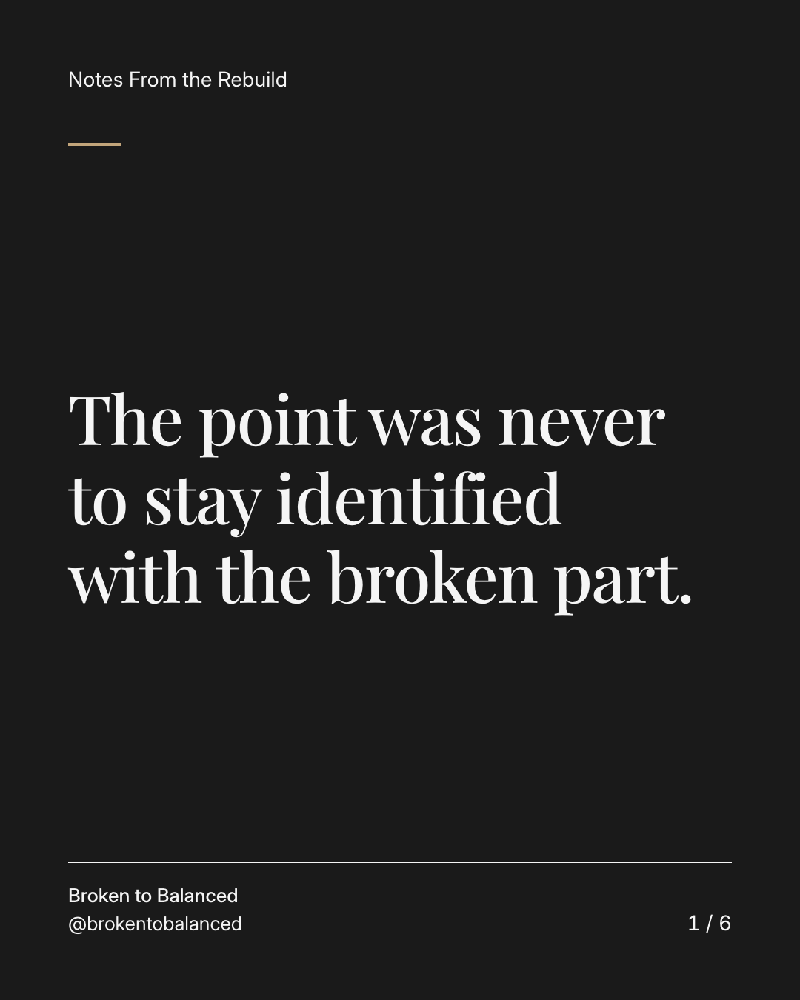
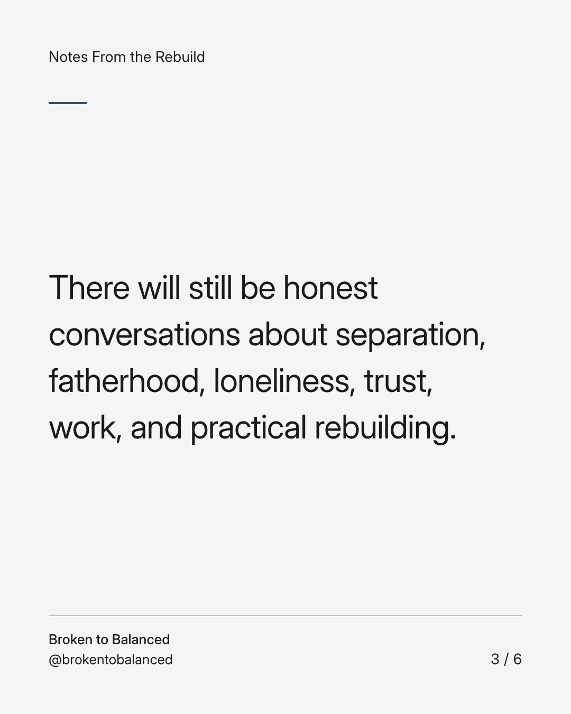
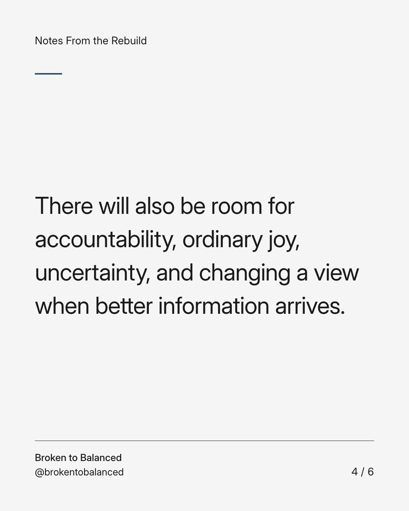
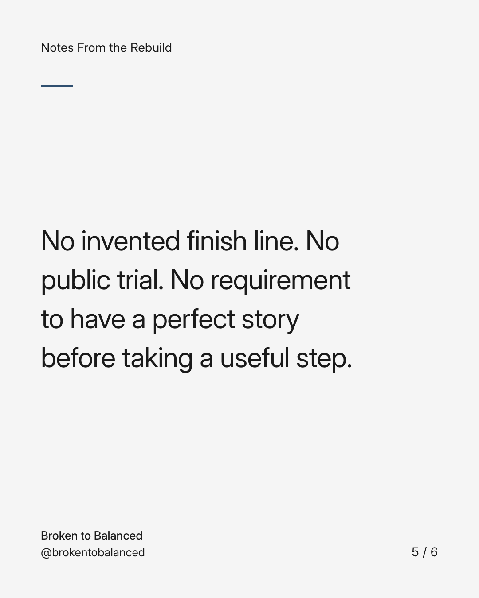
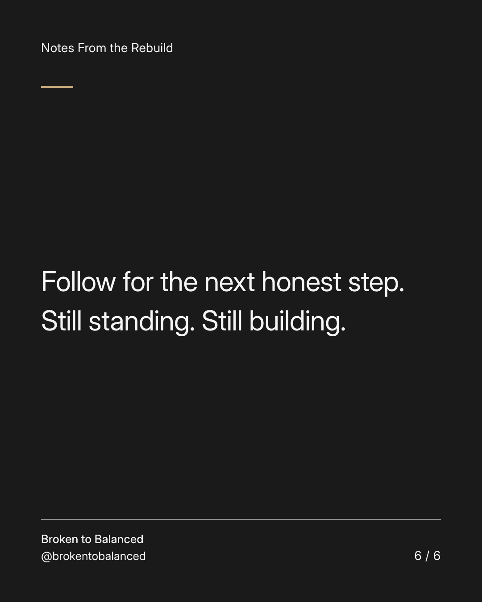

Exact text and accessibility text
The point was never to stay identified with the broken part.
Slide 1 of 6. The point was never to stay identified with the broken part.

Exact text and accessibility text
Broken to Balanced began with lived experience. Its purpose is to make room for life beyond the hardest chapter.
Slide 2 of 6. Broken to Balanced began with lived experience. Its purpose is to make room for life beyond the hardest chapter.


Exact text and accessibility text
There will still be honest conversations about separation, fatherhood, loneliness, trust, work, and practical rebuilding.
Slide 3 of 6. There will still be honest conversations about separation, fatherhood, loneliness, trust, work, and practical rebuilding.


Exact text and accessibility text
There will also be room for accountability, ordinary joy, uncertainty, and changing a view when better information arrives.
Slide 4 of 6. There will also be room for accountability, ordinary joy, uncertainty, and changing a view when better information arrives.


Exact text and accessibility text
No invented finish line. No public trial. No requirement to have a perfect story before taking a useful step.
Slide 5 of 6. No invented finish line. No public trial. No requirement to have a perfect story before taking a useful step.


Exact text and accessibility text
Follow for the next honest step. Still standing. Still building.
Slide 6 of 6. Follow for the next honest step. Still standing. Still building.
Exact caption
Plain-text fallback: select and copy the caption.